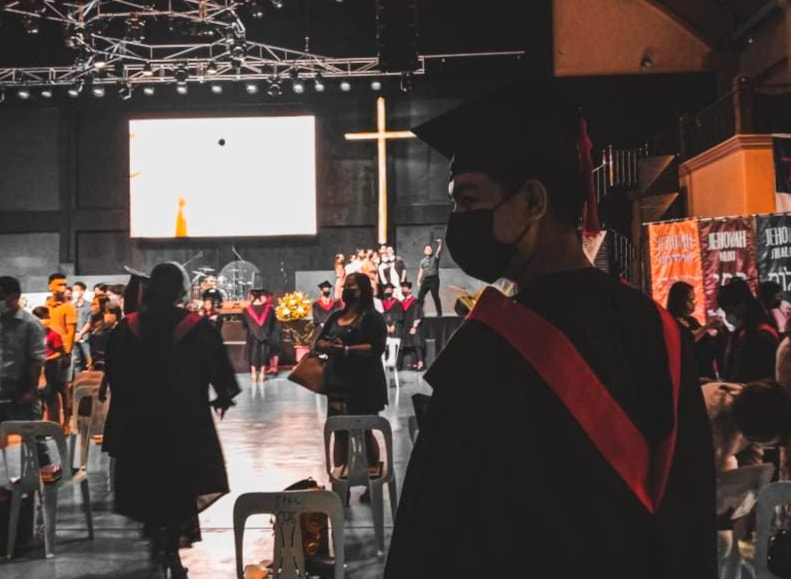

Jericho Buguina Canlas
Making every day magical.

Jericho Canlas, devoted with God and with this mocking photo - I can overcome anything.
Here's a timeline of Jericho Canlas life:
- 2002 - Born in Tarlac, Philippines
- 2008 - Started taking school grade 1 and have more friends, enjoying my journey as a child having wounds and bad odor until I become grade 6.
- 2013 - Finish Elementary at the Age of 12
- 2014 - Started become a High School Student that experiencing bad attitudes like escaping in school, wasting my time fighting with my classmates until i become grade 10 student.
- 2017 - Finish my High School Life with being fat person and lot of girls busted me.
- 2018 - Entering my Senior High Student Journey being top honor students also this journey take me more have deep relationship with God who I met the real light and save me from all my sins.
- 2019 - Year that brings me closure to God and this journey full of corrections that lead me to the light.
- 2020 - Entering my College Life who more challenging and need more to be serious to secure the future.
- 2022 - Still dreaming for the future and making actions.
-- Ephesians 3:20